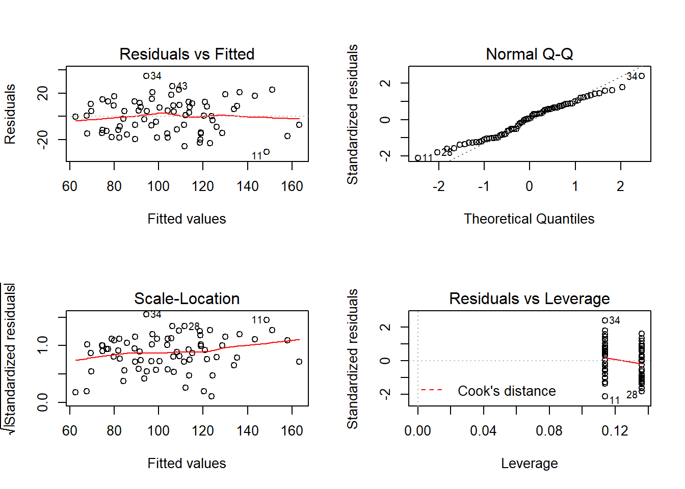
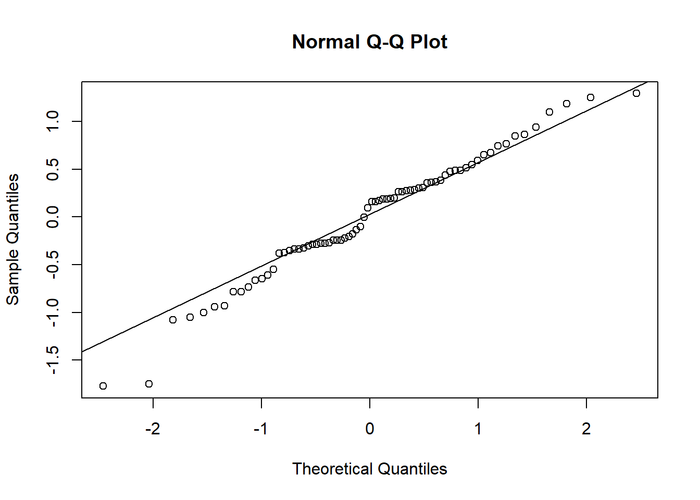
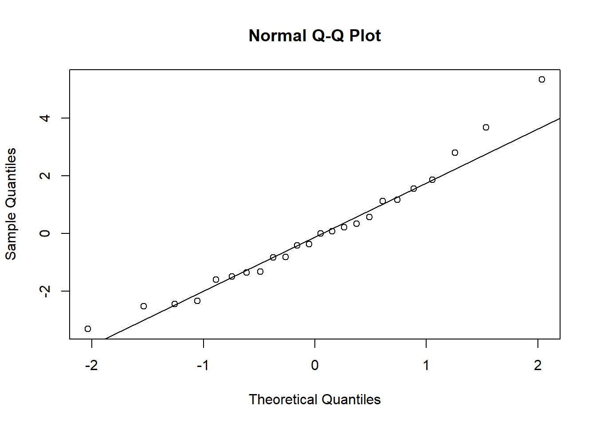

Modèles mixtes
21 novembre 2018
1. Effet de l’azote sur le rendement de variétés d’avoine
Le tableau de données Oats inclus dans le package nlme présente les résultats d’une expérience agricole en parcelles divisées (split-plot). L’expérience est réalisée en six blocs (Block). Chaque bloc est divisé en trois sections où une variété différente d’avoine est semée (Variety), puis chaque section est divisée en quatre quadrants qui reçoivent chacun une concentration différente d’azote (nitro): 0, 0.2, 0.4 ou 0.6. La variable réponse est le rendement (yield) en avoine pour chacun des 72 quadrants (6 blocs x 3 variétés x 4 concentrations d’azote).
library(nlme)
data(Oats)
# Changer le bloc en facteur non-ordonné
Oats$Block <- factor(Oats$Block, ordered = FALSE)
str(Oats)## Classes 'nfnGroupedData', 'nfGroupedData', 'groupedData' and 'data.frame': 72 obs. of 4 variables:
## $ Block : Factor w/ 6 levels "VI","V","III",..: 6 6 6 6 6 6 6 6 6 6 ...
## $ Variety: Factor w/ 3 levels "Golden Rain",..: 3 3 3 3 1 1 1 1 2 2 ...
## $ nitro : num 0 0.2 0.4 0.6 0 0.2 0.4 0.6 0 0.2 ...
## $ yield : num 111 130 157 174 117 114 161 141 105 140 ...
## - attr(*, "formula")=Class 'formula' language yield ~ nitro | Block
## .. ..- attr(*, ".Environment")=<environment: R_GlobalEnv>
## - attr(*, "labels")=List of 2
## ..$ y: chr "Yield"
## ..$ x: chr "Nitrogen concentration"
## - attr(*, "units")=List of 2
## ..$ y: chr "(bushels/acre)"
## ..$ x: chr "(cwt/acre)"
## - attr(*, "inner")=Class 'formula' language ~Variety
## .. ..- attr(*, ".Environment")=<environment: R_GlobalEnv>- Pour les facteurs
BlocketVariety, quel type de contrastes devriez-vous utiliser pour comparer l’effet de chaque catégorie à la moyenne, plutôt qu’à une catégorie de référence? Spécifiez ce type de contrastes et nommez les variables de contraste pour en faciliter l’interprétation.
Réponse
contrasts(Oats$Block) <- "contr.sum"
# Ajout de noms aux contrastes (correspondant aux N - 1 premiers niveaux)
colnames(contrasts(Oats$Block)) <- levels(Oats$Block)[-6]
contrasts(Oats$Variety) <- "contr.sum"
colnames(contrasts(Oats$Variety)) <- levels(Oats$Variety)[-3]- Estimez les paramètres d’un modèle linéaire du rendement en fonction de la concentration d’azote, de la variété d’avoine et d’un effet fixe du bloc. Vérifiez s’il est utile d’inclure l’interaction entre l’azote et la variété. Que signifierait une telle interaction?
Réponse
Une interaction signifierait que l’effet de l’azote sur le rendement varie d’une variété à l’autre.
Pour vérifier si l’interaction est significative entre une variable catégorielle et une variable numérique, nous pouvons consulter le tableau d’ANOVA du modèle avec l’interaction. Celui-ci montre que l’interaction n’est pas significative.
mod1b_inter <- lm(yield ~ nitro * Variety + Block, Oats)
anova(mod1b_inter)## Analysis of Variance Table
##
## Response: yield
## Df Sum Sq Mean Sq F value Pr(>F)
## nitro 1 19536.4 19536.4 81.5155 7.648e-13 ***
## Variety 2 1786.4 893.2 3.7268 0.02972 *
## Block 5 15875.3 3175.1 13.2479 9.642e-09 ***
## nitro:Variety 2 168.3 84.2 0.3512 0.70524
## Residuals 61 14619.6 239.7
## ---
## Signif. codes: 0 '***' 0.001 '**' 0.01 '*' 0.05 '.' 0.1 ' ' 1Nous aurions aussi pu comparer l’AICc du modèle avec et sans interaction, qui confirme que le modèle sans interaction est préférable.
mod1b <- lm(yield ~ nitro + Variety + Block, Oats)
library(AICcmodavg)
aictab(list(sans_inter = mod1b, avec_inter = mod1b_inter))##
## Model selection based on AICc:
##
## K AICc Delta_AICc AICcWt Cum.Wt LL
## sans_inter 10 611.33 0.00 0.92 0.92 -293.86
## avec_inter 12 616.18 4.86 0.08 1.00 -293.45- Choisissez le modèle avec ou sans interaction selon votre résultat en (b), vérifiez les graphiques de diagnostic et interprétez la valeur des coefficients.
Réponse
plot(mod1b) # Modèle sans interaction
Il n’y a pas de tendance marquée pour les résidus. Le diagramme quantile-quantile montre que les observations ont un peu moins de valeurs extrêmes qu’une distribution normale (car les quantiles des résidus aux deux extrémités sont plus près de 0 que les quantiles théoriques).
summary(mod1b)##
## Call:
## lm(formula = yield ~ nitro + Variety + Block, data = Oats)
##
## Residuals:
## Min 1Q Median 3Q Max
## -30.519 -12.959 0.781 10.706 34.631
##
## Coefficients:
## Estimate Std. Error t value Pr(>|t|)
## (Intercept) 81.8722 3.0213 27.098 < 2e-16 ***
## nitro 73.6667 8.0748 9.123 3.97e-13 ***
## VarietyGolden Rain 0.5278 2.5535 0.207 0.83692
## VarietyMarvellous 5.8194 2.5535 2.279 0.02606 *
## BlockVI -7.7222 4.0374 -1.913 0.06034 .
## BlockV -13.0556 4.0374 -3.234 0.00195 **
## BlockIII -8.0556 4.0374 -1.995 0.05035 .
## BlockIV -5.8056 4.0374 -1.438 0.15540
## BlockII 3.2778 4.0374 0.812 0.41993
## ---
## Signif. codes: 0 '***' 0.001 '**' 0.01 '*' 0.05 '.' 0.1 ' ' 1
##
## Residual standard error: 15.32 on 63 degrees of freedom
## Multiple R-squared: 0.7155, Adjusted R-squared: 0.6794
## F-statistic: 19.81 on 8 and 63 DF, p-value: 1.507e-14- L’ordonnée à l’origine est le rendement moyen à une concentration d’azote de 0.
- Le rendement augmente d’environ 74 par unité de concentration d’azote. Note: Puisque la concentration varie entre 0 et 0.6, il serait plus utile de diviser cette valeur, ex.: le rendement augmente de 7.4 par augmentation de 0.1 unités d’azote.
- Les variétés Golden Rain et Marvellous ont un rendement supérieur de 0.5 et 5.8 à la moyenne, respectivement. La troisième variété (Victory) a un rendement inférieur de 6.3 à la moyenne (-(0.5 + 5.8)).
- De même, les coefficients des blocs donnent la différence de rendement moyen entre ce bloc et la moyenne générale. Le dernier bloc (BlockI) a un rendement supérieur de 31.4 à la moyenne (la somme des six différences doit être 0 pour
contr.sum).
- Estimez maintenant les paramètres d’un modèle mixte identique au modèle linéaire en (c), excepté que l’effet des blocs est aléatoire plutôt que fixe. Comparez les effets fixes communs aux deux modèles, ainsi que les effets fixes de bloc du modèle précédent aux effets aléatoires par bloc de ce nouveau modèle. Expliquez les différences que vous observez, s’il y a lieu.
Réponse
Les fonctions fixef et ranef permettent d’obtenir les effets fixes et aléatoires du modèle mixte.
library(lme4)
mod1d <- lmer(yield ~ nitro + Variety + (1 | Block), Oats)
fixef(mod1d)## (Intercept) nitro VarietyGolden Rain
## 81.8722222 73.6666667 0.5277778
## VarietyMarvellous
## 5.8194444ranef(mod1d)## $Block
## (Intercept)
## VI -7.151326
## V -12.090372
## III -7.460016
## IV -5.376357
## II 3.035455
## I 29.042616Les effets fixes (ordonnée à l’origine, azote et variétés) sont les mêmes pour les deux modèles.
- Note: Ici, on a un plan d’expérience complètement équilibré, avec les mêmes combinaisons de variétés et de concentrations d’azote dans chaque bloc. Si ce n’était pas le cas, on ne s’attendrait pas à ce que les effets estimés pour l’azote et la variété soient les mêmes dans les deux versions du modèle.
Les effets aléatoires de bloc sont moins extrêmes que les effets fixes du modèle précédent (ex.: -7.2 au lieu de -7.7 pour le bloc VI, 29.0 plutôt que 31.4 pour le bloc I). Cela est conforme avec l’idée que le modèle mixte contracte les effets aléatoires.
- Calculez la corrélation intra-classe pour le modèle mixte en (d). Quelle est la signification mathématique de ce coefficient? Comment interprétez-vous de résultat d’un point de vue biologique?
Réponse
La corrélation intra-classe est obtenue en divisant la variance des effets aléatoires de groupe (blocs) par la somme de la variance de groupe et la variance résiduelle. Ces valeurs apparaissent dans le résultat sommaire du modèle.
summary(mod1d)## Linear mixed model fit by REML ['lmerMod']
## Formula: yield ~ nitro + Variety + (1 | Block)
## Data: Oats
##
## REML criterion at convergence: 590.2
##
## Scaled residuals:
## Min 1Q Median 3Q Max
## -1.84069 -0.80849 0.04022 0.70484 2.22148
##
## Random effects:
## Groups Name Variance Std.Dev.
## Block (Intercept) 245.0 15.65
## Residual 234.7 15.32
## Number of obs: 72, groups: Block, 6
##
## Fixed effects:
## Estimate Std. Error t value
## (Intercept) 81.8722 7.0687 11.582
## nitro 73.6667 8.0748 9.123
## VarietyGolden Rain 0.5278 2.5535 0.207
## VarietyMarvellous 5.8194 2.5535 2.279
##
## Correlation of Fixed Effects:
## (Intr) nitro VrtyGR
## nitro -0.343
## VartyGldnRn 0.000 0.000
## VartyMrvlls 0.000 0.000 -0.500cic <- 245 / (234.7 + 245)
cic## [1] 0.5107359Ce coefficient signifie qu’après avoir tenu compte des effets fixes (variété et azote), la variation entre les blocs compte pour 51% de la variation restante, l’autre 49% étant la variation entre observations d’un même bloc. D’un point de vue biologique, cela signifie que les facteurs aléatoires à grande échelle (bloc) et à petite échelle (quadrant) ont une influence environ égale sur le rendement observé.
2. Indicateurs d’une maladie chez les abeilles
La loque américaine est une maladie infectieuse affectant les colonies d’abeille. Le tableau de données bees.csv, tiré du manuel de Zuur et al. Mixed Effects Models and Extensions in Ecology with R, contient des mesures de la densité de spores bactériennes (Spobee) relevée sur 72 abeilles provenant de 24 ruches (Hive, 3 abeilles par ruche).
Nous voulons déterminer la relation entre cette densité de spores et deux variables définies par ruche: le niveau d’infection observé dans la ruche (Infection) et un estimé de la taille de la colonie (BeesN).
bees <- read.csv("bees.csv")
str(bees)## 'data.frame': 72 obs. of 7 variables:
## $ Rawdata : num 2 4 2 2 6 0 6 2 5 10 ...
## $ Spobee : num 6.67 13.33 6.67 6.67 20 ...
## $ Hive : int 1 1 1 2 2 2 3 3 3 4 ...
## $ X : int 0 0 0 0 0 0 0 0 0 0 ...
## $ Y : num 0 0 0 91 91 91 262 262 262 353 ...
## $ Infection: int 0 0 0 0 0 0 0 0 0 0 ...
## $ BeesN : int 95000 95000 95000 95000 95000 95000 85000 85000 85000 90000 ...- Avant de modéliser ces données, effectuez les transformations suivantes.
Le niveau d’infection est sur une échelle qualitative (0 = pas de symptômes, 1 = infection légere, 2 = modérée et 3 = sévère). Puisque nous avons très peu de ruches pour les différents niveaux d’infection (1 de niveau 1, 1 de niveau 2 et 2 de niveau 3), créez une nouvelle variable binaire
pres_infqui indique la présence (niveaux 1 à 3) ou l’absence (niveau 0) d’infection.La distribution de la réponse
Spobeeest très asymétrique. Tel que suggéré par Zuur et al., créez une nouvelle variable en appliquant la fonctionlog1p, équivalente à log(Spobee + 1). Il s’agit d’une transformation logarithmique où on a préalabement ajouté 1 à la réponse, afin d’éviter de prendre le logarithme de 0.Exprimez la taille de la colonie en unités de 10 000 abeilles.
Réponse
library(dplyr)
bees <- mutate(bees, logspore = log1p(Spobee),
pres_inf = Infection > 0, Bees_10k = BeesN / 10000)- Estimez les paramètres d’un modèle mixte pour déterminer l’effet de la présence d’infection et de la taille de la colonie sur la densité de spores (transformée) observée sur les abeilles. Quel effet aléatoire serait approprié pour ce problème?
Réponse
Puisque les observations sont groupées par ruche, il faut utiliser Hive comme effet aléatoire.
mod2b <- lmer(logspore ~ pres_inf + Bees_10k + (1 | Hive), bees)
summary(mod2b)## Linear mixed model fit by REML ['lmerMod']
## Formula: logspore ~ pres_inf + Bees_10k + (1 | Hive)
## Data: bees
##
## REML criterion at convergence: 240.7
##
## Scaled residuals:
## Min 1Q Median 3Q Max
## -2.2837 -0.4321 0.1626 0.5108 1.6666
##
## Random effects:
## Groups Name Variance Std.Dev.
## Hive (Intercept) 4.8222 2.1960
## Residual 0.6033 0.7767
## Number of obs: 72, groups: Hive, 24
##
## Fixed effects:
## Estimate Std. Error t value
## (Intercept) 6.8529 1.7920 3.824
## pres_infTRUE 6.1487 1.2704 4.840
## Bees_10k -0.3953 0.2423 -1.631
##
## Correlation of Fixed Effects:
## (Intr) p_TRUE
## pres_nfTRUE -0.358
## Bees_10k -0.960 0.257- Utilisez des graphiques de diagnostic pour vérifier les suppositions du modèle, incluant la normalité des effets aléatoires.
Réponse
Le graphique des résidus vs. valeurs prédites indique un problème possible au niveau de l’homogénéité de la variance: la variance des résidus diminue pour les valeurs prédites plus élevées.
plot(mod2b)
Le diagramme quantile-quantile des résidus montre une assez bonne normalité (excepté deux valeurs extrêmes en bas).
qqnorm(residuals(mod2b))
qqline(residuals(mod2b))
Le diagramme quantile-quantile des effets aléatoires semble dévier de la normalité: les points suivent une courbe, indiquant une distribution asymétrique.
effets_alea <- ranef(mod2b)$Hive$`(Intercept)`
qqnorm(effets_alea)
qqline(effets_alea)
L’asymétrie est plus évidente sur un histogramme des effets aléatoires.
hist(effets_alea)
- Quel est le coefficient de corrélation intra-classe de ce modèle? Pour estimer plus précisément les effets fixes de ce modèle, serait-il préférable d’échantillonner plus de ruches, ou plus d’abeilles par ruche?
Réponse
D’après les résultats sommaires du modèle en (b), la variance de groupe est de 4.82 et la variance résiduelle est de 0.60, pour une coefficient de 0.89.
cic <- 4.82 / (4.82 + 0.60)
cic## [1] 0.8892989Vu que 89% de la variation aléatoire est présente entre les ruches et seulement 11% entre les individus d’une même ruche, il serait plus utile d’échantilloner davantage de ruches.
- Quels sont les intervalles de confiance à 95% des effets fixes dans le modèle mixte? Si on remplaçait ce modèle par une régression linéaire ignorant complètement la variable
Hive, ces intervalles seraient-ils plus étroits ou plus larges, et pourquoi?
Réponse
La fonction confint estime les intervalles de confiance.
confint(mod2b)## 2.5 % 97.5 %
## .sig01 1.5546533 2.82978175
## .sigma 0.6439126 0.96238928
## (Intercept) 3.4315810 10.27421447
## pres_infTRUE 3.7230680 8.57424212
## Bees_10k -0.8579460 0.06734691Voici le modèle linéaire sans effet de ruche.
mod2f <- lm(logspore ~ pres_inf + Bees_10k, bees)
confint(mod2f)## 2.5 % 97.5 %
## (Intercept) 4.7924563 8.913339
## pres_infTRUE 4.6878782 7.609432
## Bees_10k -0.6739221 -0.116677Ces intervalles de confiance sont moins large que ceux du modèle mixte. En particulier, la variable Bees_10k est significative ici, mais ne l’était pas dans le modèle mixte.
Le modèle linéaire suppose que les 72 observations sont indépendantes et calcule les intervalles de confiance d’après cette supposition. Toutefois, nous avons 3 observations dans chacune des 24 ruches et ces trois observations sont très corrélées, comme le montre le résultat en (e). Dans ce cas, le modèle linéaire surestime la précision des estimés.